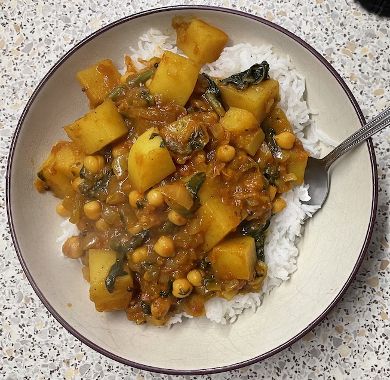

Potato & chickpea curry
- Fry on high heat until seeds start to crackle
- 3 tbsp vegetable oil
- ½ tsp mustard seeds
- 1 tsp cumin seeds
- Add and heat for 5 mins
- 2 large onions
- 1 large knob ginger
- 2 green chillies
- Add and heat for 5 mins until onion is soft
- 2 tsp ground coriander
- 2 tsp garam masala
- 1 tsp ground turmeric
- Add and simmer for 35-40 mins until potatoes cooked (needs to be hot enough to cook potatoes)
- 1 tin chickpeas
- 1 tin tomatoes
- 600g potatoes cut into bite size chunks
- 1 tsp sugar
- ½ tin water & ¼ stock cube
- pinch chilli flakes
- ground black pepper
- Add 5 mins before end
- 100g spinach stalks removed
- Add to taste
- lemon juice
- salt
- fresh coriander chopped (optional)
Serving
- rice, bread, mango chutney
- 4 portions
